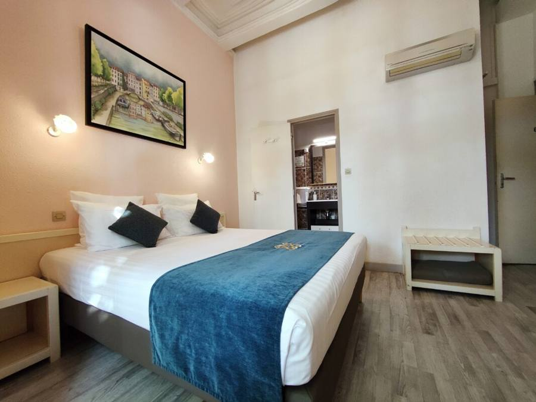
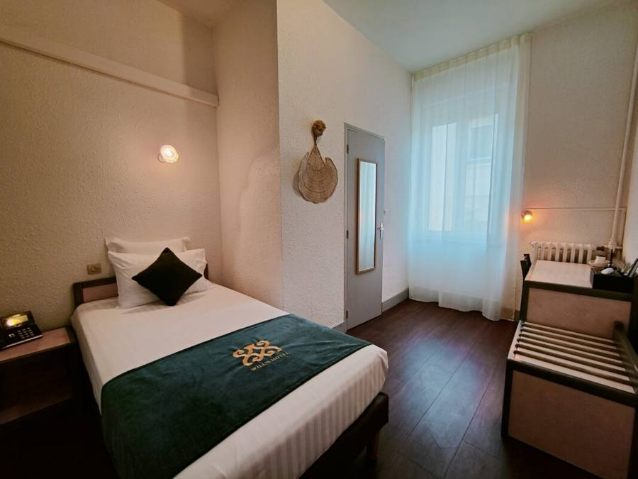
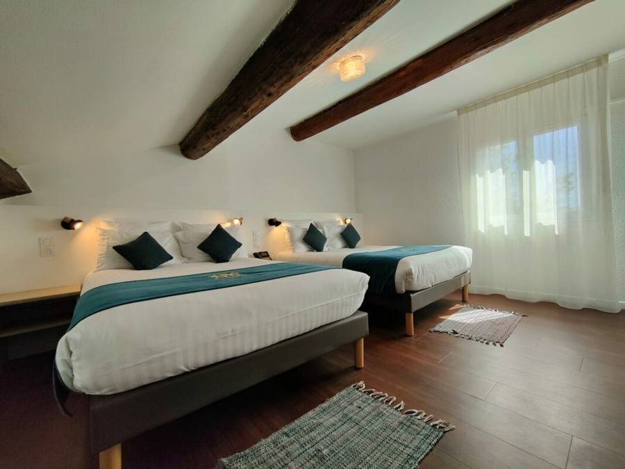
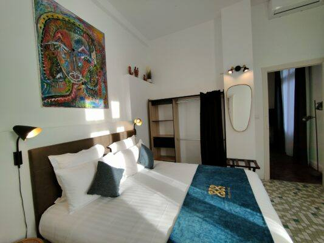
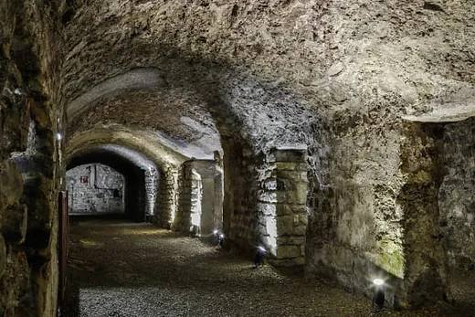
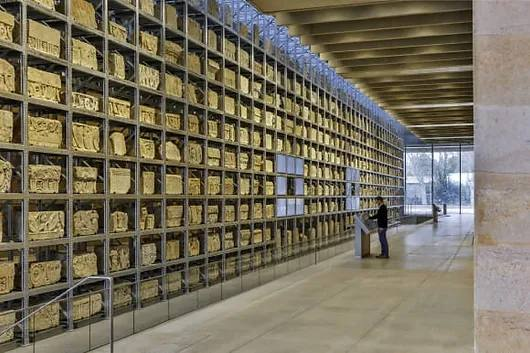
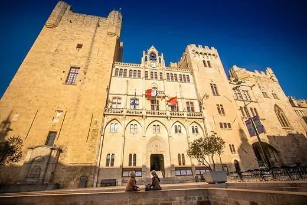

<!doctype html>
<html lang="fr">
<head>
<meta charset="utf-8">
<meta name="viewport" content="width=device-width,initial-scale=1">
<title>Will's Hôtel · Narbonne</title>
<meta name="robots" content="noindex">
<style>
:root{--bg:#f7f3ec;--card:#fff;--ink:#2a2622;--mut:#6f665c;--acc:#8c2f39;--line:#e4dccf}
*{box-sizing:border-box}
body{margin:0;background:var(--bg);color:var(--ink);font:16px/1.55 system-ui,-apple-system,"Segoe UI",Roboto,sans-serif}
header{position:sticky;top:0;z-index:5;background:#fffdf9ee;backdrop-filter:blur(8px);border-bottom:1px solid var(--line);padding:8px 14px;display:flex;align-items:center;gap:10px;flex-wrap:wrap}
header img{height:34px;width:auto}
.langs{margin-left:auto;display:flex;gap:4px}
.langs button{border:1px solid var(--line);background:#fff;border-radius:999px;padding:3px 9px;font-size:20px;line-height:1.2;cursor:pointer}
.langs button[aria-pressed=true]{border-color:var(--acc);box-shadow:0 0 0 2px #8c2f3933}
nav{display:flex;gap:6px;overflow-x:auto;padding:8px 14px;background:#fffdf9;border-bottom:1px solid var(--line)}
nav a{white-space:nowrap;text-decoration:none;color:var(--ink);background:#f0e9dc;border-radius:999px;padding:5px 12px;font-size:14px;font-weight:600}
main{max-width:760px;margin:0 auto;padding:14px}
.hero{border-radius:16px;overflow:hidden;margin-bottom:14px;position:relative}
.hero img{display:block;width:100%;height:auto}
.hero h1{position:absolute;left:0;right:0;bottom:0;margin:0;padding:34px 16px 14px;color:#fff;font-size:24px;background:linear-gradient(transparent,#000a)}
section{background:var(--card);border:1px solid var(--line);border-radius:16px;padding:16px;margin:0 0 14px;scroll-margin-top:110px}
h2{margin:0 0 10px;font-size:19px;color:var(--acc)}
h3{margin:12px 0 4px;font-size:16px}
ul{margin:6px 0;padding-left:20px}
.row{display:flex;justify-content:space-between;gap:10px;padding:8px 0;border-top:1px solid var(--line)}
.row:first-of-type{border-top:0}
.row small{color:var(--mut);display:block}
.price{white-space:nowrap;font-weight:700;color:var(--acc)}
.pics{display:grid;grid-template-columns:repeat(auto-fit,minmax(150px,1fr));gap:8px;margin:10px 0}
.pics img{width:100%;border-radius:10px;display:block}
.btn{display:inline-block;margin:8px 8px 0 0;background:var(--acc);color:#fff;text-decoration:none;padding:10px 16px;border-radius:10px;font-weight:700}
.btn.alt{background:#fff;color:var(--acc);border:1px solid var(--acc)}
.muted{color:var(--mut);font-size:14px}
footer{text-align:center;color:var(--mut);font-size:12px;padding:14px}
</style>
</head>
<body>
<header><div class="langs" id="langs" role="group"></div></header>
<nav id="nav"></nav>
<main id="app"></main>
<footer>Will's Hôtel · 23 avenue Pierre Sémard · 11100 Narbonne</footer>
<script>
const FLAG={fr:'🇫🇷',en:'🇬🇧',es:'🇪🇸',de:'🇩🇪',nl:'🇳🇱'};
const NAME={fr:'Français',en:'English',es:'Español',de:'Deutsch',nl:'Nederlands'};
const BOOK='https://willshotelnarbonne.thais-hotel.com/direct-booking/calendar';
const T={
fr:{title:"Will’s Hôtel · Narbonne",tag:"Une maison familiale entre la gare et le centre-ville",nav:["Infos utiles","Chambres","Appartement","Découvrir Narbonne","Partenaires","Contact"],
 infoH:"Infos utiles",ci:"Arrivée (check-in) : à partir de 16h00",co:"Départ (check-out) : jusqu’à 11h00",rec:"Réception ouverte tous les jours de 8h00 à 22h00",
 smoke:"Établissement entièrement non-fumeur (chambres et espaces intérieurs).",pmr:"Accessibilité : l’établissement ne dispose pas des aménagements pour les personnes à mobilité réduite. Chambres au 1er ou 2e étage, accessibles uniquement par escaliers.",
 speak:"Langues parlées : français, anglais, espagnol, roumain",loc:"À 2 minutes à pied de la gare, au cœur de Narbonne, entre la gare et le centre-ville.",
 park:"Parking : pas de parking privé. Stationnement dans l’avenue devant l’hôtel. Payant du lundi au vendredi de 9h à 12h et de 14h à 18h (30 min offertes par jour) ; gratuit chaque soir de 18h à 9h et tout le week-end, du vendredi 18h au lundi 9h.",
 about:"Installé dans un bâtiment de caractère du XIXᵉ siècle, notre hôtel compte 14 chambres lumineuses, climatisées et décorées une à une, avec salle de bain privative, télévision à écran plat et Wi-Fi gratuit.",
 roomsH:"Chambres & tarifs",from:"à partir de",night:"/ nuit",
 rooms:[["Chambre Single","10 m² · 1 personne · lit simple 100×200",70],["Double Économique","11 m² · lit double 140×200",77],["Double Queen Size","20 m² · lit queen 160×200",80],["Double Lits jumeaux","20 m² · 2 lits simples 90×200",80],["Chambre Familiale","25 m² · 3 lits doubles 140×200",100]],
 equip:"Dans chaque chambre : télévision, douche ou bain + WC, Wi-Fi gratuit, climatisation.",
 extras:["Personne supplémentaire : 10 € TTC / nuit","Petit déjeuner sucré-salé : 11 € TTC / personne / jour","Départ tardif : moitié du prix de la chambre"],
 cancel:"Annulation sans frais jusqu’à 24 h avant le séjour (48 h pour les groupes de plus de 2 chambres).",pay:"Paiement à l’arrivée : espèces, chèques-vacances et cartes bancaires. Une pièce d’identité est demandée.",tax:"Taxe de séjour en supplément.",book:"Réserver",
 apH:"L’appartement",ap:"Logement lumineux classé 4 étoiles (meublé de tourisme), à 300 m de l’hôtel : T2 de 37 m² avec chambre (lit 160×200), salle de bain avec douche, salon avec canapé convertible, TV connectée, Wi-Fi et cuisine équipée. Climatisé, double vitrage, balcon plein sud. 1er étage d’un immeuble haussmannien sans ascenseur.",apTax:"Taxe de séjour : 3,31 € par adulte et par nuit.",
 tourH:"Découvrir Narbonne",tour:"Ensoleillement exceptionnel, patrimoine historique riche, cuisine méditerranéenne et vins de la région.",spots:["Via Domitia","Pont des Marchands","Horreum romain","Narbo Via","Palais des Archevêques","Gruissan & Narbonne-Plage","Le Somail","Amphoralis","Idées de randonnée","Bages"],tourist:"Office de tourisme",
 partH:"Partenaires",part:["Coworking Les Barques — salles de réunion, bureaux et open spaces, à 950 m de l’hôtel.","Denantes (literie) — 20 % de réduction : renseignements à la réception.","Petit Grain de Bois — pièces en bois travaillées à la main.","LJTVC 11 — William, chauffeur pour tous vos déplacements."],
 contH:"Contact",addr:"23 avenue Pierre Sémard, 11100 Narbonne",call:"Appeler",mail:"Écrire",pdf:"Plaquette de l’hôtel (PDF)"},
en:{title:"Will’s Hotel · Narbonne",tag:"A family-run hotel between the station and the town centre",nav:["Useful info","Rooms","Apartment","Discover Narbonne","Partners","Contact"],
 infoH:"Useful information",ci:"Check-in: from 4:00 pm",co:"Check-out: until 11:00 am",rec:"Reception open every day from 8:00 am to 10:00 pm",
 smoke:"Fully non-smoking hotel (rooms and indoor areas).",pmr:"Accessibility: the hotel is unfortunately not equipped for guests with reduced mobility. Rooms are on the 1st or 2nd floor, stairs only.",
 speak:"Languages spoken: French, English, Spanish, Romanian",loc:"2 minutes on foot from the train station, in the heart of Narbonne between the station and the town centre.",
 park:"Parking: no private car park. Park on the avenue in front of the hotel. Paid Monday–Friday 9am–12pm and 2pm–6pm (30 free minutes a day); free every evening 6pm–9am and all weekend, from Friday 6pm to Monday 9am.",
 about:"Set in a 19th-century building full of character, our hotel has 14 bright, air-conditioned rooms, each individually decorated, with private bathroom, flat-screen TV and free Wi-Fi.",
 roomsH:"Rooms & rates",from:"from",night:"/ night",
 rooms:[["Single Room","10 m² · 1 person · single bed 100×200",70],["Economy Double","11 m² · double bed 140×200",77],["Double Queen Size","20 m² · queen bed 160×200",80],["Twin Room","20 m² · 2 single beds 90×200",80],["Family Room","25 m² · 3 double beds 140×200",100]],
 equip:"In every room: TV, shower or bath + WC, free Wi-Fi, air conditioning.",
 extras:["Extra person: €10 incl. tax / night","Sweet & savoury breakfast: €11 incl. tax / person / day","Late check-out: half the room price"],
 cancel:"Free cancellation up to 24 h before your stay (48 h for groups of more than 2 rooms).",pay:"Payment on arrival: cash, holiday vouchers and bank cards. ID is required.",tax:"Tourist tax is extra.",book:"Book",
 apH:"The apartment",ap:"Bright 4-star furnished tourist rental, 300 m from the hotel: 37 m² one-bedroom flat with a 160×200 bed, bathroom with shower, living room with sofa bed, smart TV, Wi-Fi and fully equipped kitchen. Air-conditioned, double glazing, south-facing balcony. First floor of a Haussmann-style building, no lift.",apTax:"Tourist tax: €3.31 per adult per night.",
 tourH:"Discover Narbonne",tour:"Exceptional sunshine, rich history, Mediterranean cuisine and local wines.",spots:["Via Domitia","Pont des Marchands","Roman Horreum","Narbo Via","Archbishops’ Palace","Gruissan & Narbonne-Plage","Le Somail","Amphoralis","Hiking ideas","Bages"],tourist:"Tourist office",
 partH:"Partners",part:["Coworking Les Barques — meeting rooms, offices and open spaces, 950 m from the hotel.","Denantes (bedding) — 20% off: ask at reception.","Petit Grain de Bois — handmade wooden pieces.","LJTVC 11 — William, driver for all your trips."],
 contH:"Contact",addr:"23 avenue Pierre Sémard, 11100 Narbonne, France",call:"Call",mail:"Email",pdf:"Hotel brochure (PDF)"},
es:{title:"Will’s Hôtel · Narbona",tag:"Un hotel familiar entre la estación y el centro",nav:["Información útil","Habitaciones","Apartamento","Descubrir Narbona","Colaboradores","Contacto"],
 infoH:"Información útil",ci:"Entrada (check-in): a partir de las 16:00",co:"Salida (check-out): hasta las 11:00",rec:"Recepción abierta todos los días de 8:00 a 22:00",
 smoke:"Establecimiento totalmente libre de humo (habitaciones y zonas interiores).",pmr:"Accesibilidad: lamentablemente el hotel no está adaptado para personas con movilidad reducida. Habitaciones en la 1.ª o 2.ª planta, solo por escaleras.",
 speak:"Idiomas: francés, inglés, español, rumano",loc:"A 2 minutos a pie de la estación, en el corazón de Narbona.",
 park:"Aparcamiento: sin parking privado. Se puede aparcar en la avenida frente al hotel. De pago de lunes a viernes de 9 a 12 h y de 14 a 18 h (30 min gratis al día); gratis cada noche de 18 a 9 h y todo el fin de semana, del viernes 18 h al lunes 9 h.",
 about:"En un edificio con carácter del siglo XIX, nuestro hotel tiene 14 habitaciones luminosas y con aire acondicionado, decoradas una a una, con baño privado, TV de pantalla plana y Wi-Fi gratis.",
 roomsH:"Habitaciones y tarifas",from:"desde",night:"/ noche",
 rooms:[["Habitación individual","10 m² · 1 persona · cama 100×200",70],["Doble económica","11 m² · cama doble 140×200",77],["Doble Queen Size","20 m² · cama queen 160×200",80],["Doble camas separadas","20 m² · 2 camas 90×200",80],["Habitación familiar","25 m² · 3 camas dobles 140×200",100]],
 equip:"En cada habitación: TV, ducha o bañera + WC, Wi-Fi gratis, aire acondicionado.",
 extras:["Persona adicional: 10 € IVA incl. / noche","Desayuno dulce y salado: 11 € IVA incl. / persona / día","Salida tardía: mitad del precio de la habitación"],
 cancel:"Cancelación gratuita hasta 24 h antes (48 h para grupos de más de 2 habitaciones).",pay:"Pago a la llegada: efectivo, cheques vacaciones y tarjetas. Se pide documento de identidad.",tax:"Tasa turística aparte.",book:"Reservar",
 apH:"El apartamento",ap:"Alojamiento luminoso de 4 estrellas a 300 m del hotel: T2 de 37 m² con dormitorio (cama 160×200), baño con ducha, salón con sofá cama, TV conectada, Wi-Fi y cocina equipada. Aire acondicionado, doble acristalamiento, balcón orientado al sur. Primer piso, sin ascensor.",apTax:"Tasa turística: 3,31 € por adulto y noche.",
 tourH:"Descubrir Narbona",tour:"Sol excepcional, rico patrimonio histórico, cocina mediterránea y vinos de la región.",spots:["Vía Domitia","Pont des Marchands","Horreum romano","Narbo Via","Palacio de los Arzobispos","Gruissan y Narbonne-Plage","Le Somail","Amphoralis","Ideas de senderismo","Bages"],tourist:"Oficina de turismo",
 partH:"Colaboradores",part:["Coworking Les Barques — salas de reuniones y oficinas, a 950 m del hotel.","Denantes (colchones) — 20 % de descuento: consultar en recepción.","Petit Grain de Bois — piezas de madera hechas a mano.","LJTVC 11 — William, chófer para todos sus desplazamientos."],
 contH:"Contacto",addr:"23 avenue Pierre Sémard, 11100 Narbona, Francia",call:"Llamar",mail:"Escribir",pdf:"Folleto del hotel (PDF)"},
de:{title:"Will’s Hôtel · Narbonne",tag:"Ein Familienhotel zwischen Bahnhof und Stadtzentrum",nav:["Infos","Zimmer","Apartment","Narbonne entdecken","Partner","Kontakt"],
 infoH:"Nützliche Infos",ci:"Check-in: ab 16:00 Uhr",co:"Check-out: bis 11:00 Uhr",rec:"Rezeption täglich von 8:00 bis 22:00 Uhr geöffnet",
 smoke:"Komplett rauchfreies Haus (Zimmer und Innenräume).",pmr:"Barrierefreiheit: Das Hotel ist leider nicht für mobilitätseingeschränkte Gäste ausgestattet. Zimmer im 1. oder 2. Stock, nur über Treppen.",
 speak:"Gesprochene Sprachen: Französisch, Englisch, Spanisch, Rumänisch",loc:"2 Gehminuten vom Bahnhof entfernt, im Herzen von Narbonne.",
 park:"Parken: kein eigener Parkplatz. Parken auf der Avenue vor dem Hotel. Kostenpflichtig Mo–Fr 9–12 und 14–18 Uhr (30 Min. gratis pro Tag); kostenlos jeden Abend 18–9 Uhr und am ganzen Wochenende, von Freitag 18 Uhr bis Montag 9 Uhr.",
 about:"In einem charaktervollen Gebäude aus dem 19. Jahrhundert bietet unser Hotel 14 helle, klimatisierte, individuell eingerichtete Zimmer mit eigenem Bad, Flachbild-TV und kostenlosem WLAN.",
 roomsH:"Zimmer & Preise",from:"ab",night:"/ Nacht",
 rooms:[["Einzelzimmer","10 m² · 1 Person · Bett 100×200",70],["Economy-Doppelzimmer","11 m² · Doppelbett 140×200",77],["Doppelzimmer Queen Size","20 m² · Queensize-Bett 160×200",80],["Zweibettzimmer","20 m² · 2 Einzelbetten 90×200",80],["Familienzimmer","25 m² · 3 Doppelbetten 140×200",100]],
 equip:"In jedem Zimmer: TV, Dusche oder Bad + WC, kostenloses WLAN, Klimaanlage.",
 extras:["Zusätzliche Person: 10 € inkl. MwSt. / Nacht","Süß-herzhaftes Frühstück: 11 € inkl. MwSt. / Person / Tag","Später Check-out: halber Zimmerpreis"],
 cancel:"Kostenlose Stornierung bis 24 Std. vor dem Aufenthalt (48 Std. für Gruppen mit mehr als 2 Zimmern).",pay:"Zahlung bei Ankunft: Bargeld, Urlaubsschecks und Bankkarten. Ein Ausweis ist erforderlich.",tax:"Kurtaxe zusätzlich.",book:"Buchen",
 apH:"Das Apartment",ap:"Helle 4-Sterne-Ferienwohnung, 300 m vom Hotel: 37 m² mit Schlafzimmer (Bett 160×200), Bad mit Dusche, Wohnzimmer mit Schlafsofa, Smart-TV, WLAN und voll ausgestatteter Küche. Klimatisiert, Doppelverglasung, Südbalkon. 1. Etage, ohne Aufzug.",apTax:"Kurtaxe: 3,31 € pro Erwachsenem und Nacht.",
 tourH:"Narbonne entdecken",tour:"Viel Sonne, reiches historisches Erbe, mediterrane Küche und regionale Weine.",spots:["Via Domitia","Pont des Marchands","Römisches Horreum","Narbo Via","Erzbischöflicher Palast","Gruissan & Narbonne-Plage","Le Somail","Amphoralis","Wandertipps","Bages"],tourist:"Tourismusbüro",
 partH:"Partner",part:["Coworking Les Barques — Meetingräume und Büros, 950 m vom Hotel.","Denantes (Bettwaren) — 20 % Rabatt: Infos an der Rezeption.","Petit Grain de Bois — handgefertigte Holzstücke.","LJTVC 11 — William, Fahrer für alle Ihre Fahrten."],
 contH:"Kontakt",addr:"23 avenue Pierre Sémard, 11100 Narbonne, Frankreich",call:"Anrufen",mail:"E-Mail",pdf:"Hotelbroschüre (PDF)"},
nl:{title:"Will’s Hôtel · Narbonne",tag:"Een familiehotel tussen het station en het centrum",nav:["Praktisch","Kamers","Appartement","Narbonne ontdekken","Partners","Contact"],
 infoH:"Praktische info",ci:"Inchecken: vanaf 16:00",co:"Uitchecken: tot 11:00",rec:"Receptie dagelijks geopend van 8:00 tot 22:00",
 smoke:"Volledig rookvrij hotel (kamers en binnenruimtes).",pmr:"Toegankelijkheid: het hotel is helaas niet ingericht voor mensen met beperkte mobiliteit. Kamers op de 1e of 2e verdieping, alleen via trappen.",
 speak:"Gesproken talen: Frans, Engels, Spaans, Roemeens",loc:"2 minuten lopen van het station, in het hart van Narbonne.",
 park:"Parkeren: geen eigen parkeerplaats. Parkeer aan de laan voor het hotel. Betaald van maandag t/m vrijdag 9–12 en 14–18 uur (30 min gratis per dag); gratis elke avond 18–9 uur en het hele weekend, van vrijdag 18 uur tot maandag 9 uur.",
 about:"In een karaktervol pand uit de 19e eeuw heeft ons hotel 14 lichte, airconditioned kamers, elk apart ingericht, met eigen badkamer, flatscreen-tv en gratis wifi.",
 roomsH:"Kamers & tarieven",from:"vanaf",night:"/ nacht",
 rooms:[["Eenpersoonskamer","10 m² · 1 persoon · bed 100×200",70],["Economy tweepersoonskamer","11 m² · tweepersoonsbed 140×200",77],["Queen Size kamer","20 m² · queensize bed 160×200",80],["Kamer met twee bedden","20 m² · 2 eenpersoonsbedden 90×200",80],["Familiekamer","25 m² · 3 tweepersoonsbedden 140×200",100]],
 equip:"In elke kamer: tv, douche of bad + wc, gratis wifi, airconditioning.",
 extras:["Extra persoon: € 10 incl. btw / nacht","Zoet-hartig ontbijt: € 11 incl. btw / persoon / dag","Laat uitchecken: de helft van de kamerprijs"],
 cancel:"Gratis annuleren tot 24 uur vooraf (48 uur voor groepen van meer dan 2 kamers).",pay:"Betaling bij aankomst: contant, vakantiecheques en bankkaarten. Identiteitsbewijs vereist.",tax:"Toeristenbelasting extra.",book:"Boeken",
 apH:"Het appartement",ap:"Lichte 4-sterren vakantiewoning op 300 m van het hotel: 37 m² met slaapkamer (bed 160×200), badkamer met douche, woonkamer met slaapbank, smart-tv, wifi en volledig ingerichte keuken. Airconditioning, dubbele beglazing, balkon op het zuiden. Eerste verdieping, geen lift.",apTax:"Toeristenbelasting: € 3,31 per volwassene per nacht.",
 tourH:"Narbonne ontdekken",tour:"Uitzonderlijk veel zon, rijk erfgoed, mediterrane keuken en streekwijnen.",spots:["Via Domitia","Pont des Marchands","Romeinse Horreum","Narbo Via","Aartsbisschoppelijk paleis","Gruissan & Narbonne-Plage","Le Somail","Amphoralis","Wandeltips","Bages"],tourist:"VVV",
 partH:"Partners",part:["Coworking Les Barques — vergaderzalen en kantoren, 950 m van het hotel.","Denantes (beddengoed) — 20% korting: vraag aan de receptie.","Petit Grain de Bois — handgemaakte houten stukken.","LJTVC 11 — William, chauffeur voor al uw ritten."],
 contH:"Contact",addr:"23 avenue Pierre Sémard, 11100 Narbonne, Frankrijk",call:"Bellen",mail:"E-mail",pdf:"Brochure van het hotel (PDF)"}
};
const q=new URLSearchParams(location.search);
const avail=(q.get('langs')||'fr,en,es,de,nl').split(',').map(s=>s.trim()).filter(l=>T[l]);
const langs=avail.length?avail:['fr'];
let cur=T[q.get('lang')]&&langs.includes(q.get('lang'))?q.get('lang'):(langs.includes((localStorage.getItem('nv-lang')||''))?localStorage.getItem('nv-lang'):langs[0]);
const esc=s=>String(s).replace(/[&<>"]/g,c=>({'&':'&amp;','<':'&lt;','>':'&gt;','"':'&quot;'}[c]));
function render(){
  const t=T[cur];document.documentElement.lang=cur;document.title=t.title;
  document.getElementById('langs').innerHTML=langs.length>1?langs.map(l=>`<button type="button" data-l="${l}" aria-pressed="${l===cur}" title="${NAME[l]}" aria-label="${NAME[l]}">${FLAG[l]}</button>`).join(''):'';
  const ids=['infos','rooms','apt','tour','part','contact'];
  document.getElementById('nav').innerHTML=ids.map((id,i)=>`<a href="#${id}">${esc(t.nav[i])}</a>`).join('');
  const rooms=t.rooms.map(r=>`<div class="row"><div><b>${esc(r[0])}</b><small>${esc(r[1])}</small></div><div class="price">${esc(t.from)} ${r[2]} €<small>${esc(t.night)}</small></div></div>`).join('');
  document.getElementById('app').innerHTML=`
  <div class="hero"><h1>${esc(t.tag)}</h1></div>
  <section id="infos"><h2>${esc(t.infoH)}</h2><p>${esc(t.about)}</p><ul><li>${esc(t.ci)}</li><li>${esc(t.co)}</li><li>${esc(t.rec)}</li><li>${esc(t.smoke)}</li><li>${esc(t.speak)}</li></ul><p>${esc(t.loc)}</p><p>${esc(t.park)}</p><p class="muted">${esc(t.pmr)}</p><a class="btn" href="${BOOK}" target="_blank" rel="noopener">${esc(t.book)}</a></section>
  <section id="rooms"><h2>${esc(t.roomsH)}</h2><div class="pics"></div>${rooms}<p>${esc(t.equip)}</p><ul>${t.extras.map(e=>`<li>${esc(e)}</li>`).join('')}</ul><p>${esc(t.cancel)}</p><p>${esc(t.pay)}</p><p class="muted">${esc(t.tax)}</p><a class="btn" href="${BOOK}" target="_blank" rel="noopener">${esc(t.book)}</a></section>
  <section id="apt"><h2>${esc(t.apH)}</h2><div class="pics"></div><p>${esc(t.ap)}</p><p class="muted">${esc(t.apTax)}</p></section>
  <section id="tour"><h2>${esc(t.tourH)}</h2><div class="pics"></div><p>${esc(t.tour)}</p><ul>${t.spots.map(s=>`<li>${esc(s)}</li>`).join('')}</ul><a class="btn alt" href="https://www.narbonne-tourisme.com/" target="_blank" rel="noopener">${esc(t.tourist)}</a></section>
  <section id="part"><h2>${esc(t.partH)}</h2><ul>${t.part.map(s=>`<li>${esc(s)}</li>`).join('')}</ul></section>
  <section id="contact"><h2>${esc(t.contH)}</h2><p><b>Will’s Hôtel</b><br>${esc(t.addr)}</p><a class="btn" href="tel:+33645981880">${esc(t.call)} 06 45 98 18 80</a><a class="btn alt" href="tel:+33468322628">04 68 32 26 28</a><a class="btn alt" href="mailto:contact@willshotelnarbonne.fr">${esc(t.mail)}</a><a class="btn alt" href="https://willshotelnarbonne.fr/wp-content/uploads/2026/03/Wills-HOTEL.pdf" target="_blank" rel="noopener">${esc(t.pdf)}</a></section>`;
}
document.getElementById('langs').addEventListener('click',e=>{const b=e.target.closest('button[data-l]');if(!b)return;cur=b.dataset.l;try{localStorage.setItem('nv-lang',cur);}catch{}render();});
render();
</script>
</body>
</html>
